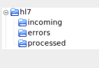
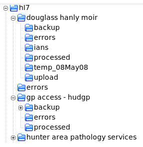

Messaging Software
Note that each provider or services to your practice such as a pathology company, radiology company, your local hospital or companies such as medical objects or argus who transmit letters to medical practices, will have their own software which must be installed on your computer, so at a minimum the following steps must be undertaken.
Install messaging downloading software.
Ensure that the providers of your incoming messaging have installed the appropriate software on your computer. You must then configure each of these software downloaders to deposit the incoming data files in the directories which you will set up in the next step.
Create an incoming directory structure.
This can be as simple as you like, for example all data files from all sources could be placed into a single incoming directory, or as complex as you like, with separate directories for each vendor. Some examples could be:

A more complex directory structure such as this could equally well be used, and may be an easier way to keep track of files from different vendors if you encounter problems:
